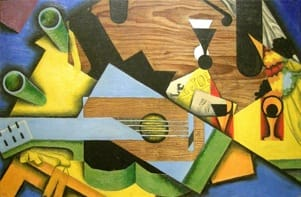

Cette position dogmatique ne résistera pas aux progrès des mathématiques. Au cours du XVII° siècle, un débat important s’engage entre les partisans d’une esthétique rationnelle et ceux que le progrès des sciences a convaincus du contraire.
Cette dernière opinion, plus en accord avec une société technologique en préparation, a conduit à la définition actuelle de l’artiste. Accroché au caractère émotionnel et subjectif de sa création et associant sa réussite à la qualité de son inspiration, l’artiste moderne perçoit souvent l’idée de la rationalité dans l’art comme une aberration réductrice.
Telle n'est pas l'opinion de Dürer qui déplore que certains confrères puissent créer, guidés par leurs seuls talents, des œuvres de qualité bien inférieures à ce qu’ils auraient pu comprendre et produire en suivant les règles de "l’art de la mesure".
(citation Dürer)
Ne nous y trompons pas, ce qui effraie tant les uns ne correspond pas aussi simplement à ce qui attire tant les autres. " l’Art de la mesure" si cher aux anciens, est étranger à cette image du carcan contraignant et scolaire : il est avant tout un pourvoyeur de canevas logiques destinés à supporter et donner du sens à l’activité créatrice. Sa pratique est donc plus libératrice qu’aliénante.

d'après Nature morte à la guitare Juan Gris
Le Traité de Lutherie apporte sur cet art des informations précises à l’attention de ceux qui souhaitent s’y exercer. À la fois pratique et théorique, il initie aux plus anciens secrets de la conception des formes.
citation Dürer :
« Gracieux seigneur et ami, jusqu’à présent, dans nos pays allemands, on a mis à l’art de peindre beaucoup de jeunes gens adroits, et on les a instruits par la seule pratique quotidienne sans leur en donner les fondements. Ils ont ainsi grandi dans l’inintelligence comme l’arbre sauvage qui n’a pas été taillé. Certains d’entre eux sont certes parvenus, à forces d’exercice continu, à la maîtrise dans le dessin à main libre et ont pu créer des ouvre puissantes, mais irréfléchies et faites à leur guise. Mais lorsque les peintres érudits et les véritables artistes ont vu une telle oeuvre irréfléchie, ils ont ri, non sans raison de la cécité de ces gens. En effet rien n’est plus désagréable à un esprit éclairé qua la fausseté dans le tableau même peint avec la plus grande application. Que ces peintres se complaisent dans l’erreur est l’unique raison qui les a empêchés d’apprendre l’art de la mesure, sans lequel il n’y a, et n’y aura pas de véritable artisan. Mais c’est aussi faute de leurs maîtres qui ignoraient eux-mêmes cet art. Comme il est le véritable fondement de toute peinture, je me suis proposé d’en enseigner les fondements aux jeunes gens avides de s’instruire dans leur art, et de leur donner des raisons pour adopter la mesure à la règle et au compas, afin qu’ils sachent reconnaître l’authentique vérité lorsqu’il l’ont sous les yeux. Ainsi ils ne seront pas seulement avides de connaître leur art, mais ils acquerront également un jugement plus sûr et plus profond. »
Dürer : Èpître dédicatoire à propos de l’Art de la mesure, 1525